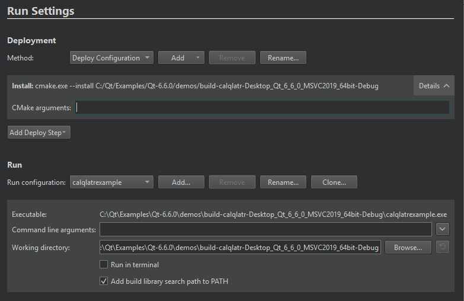

Desktop Device Run Settings
Specify settings for running applications on the Run device that you select for a kit in Projects > Build & Run > Run > Run Settings.

Working Directory
You can specify command-line arguments to be passed to the executable and the working directory to use. The working directory defaults to the directory of the build result.
Select Add Deploy Step > CMake Install to add the install option. It runs installation without using the generated build system or the native build tool. Qt Creator automatically adds the value of the Working directory field as the installation directory in the --install signature.
Run in Terminal
For console applications, select Run in terminal. To specify the terminal to use on Linux and macOS, go to Preferences > Environment > System. To use an internal terminal, go to Preferences > Terminal > Use internal terminal.
Linker Libraries
When building an application, Qt Creator creates a list of directories where the linker will look for libraries that the application links to. By default, the linked libraries are made visible to the executable that Qt Creator is attempting to run. Usually, you should disable this option only if it causes unwanted side-effects or if you use deployment steps, such as make install, and want to make sure that the deployed application will find the libraries also when it is run without Qt Creator.
To disable library linking for the current project, clear Add build library search path to PATH. To disable library linking for all projects, go to Preferences > Build & Run and then clear Add linker library search paths to run environment.
Debugging Linked Frameworks
On macOS, select Use debug version of frameworks (DYLD_IMAGE_SUFFIX=_debug) to debug (for example, step into) linked frameworks, such as the Qt framework itself. You do not need this option for debugging your application code.
Running as root User
On Linux and macOS, select Run as root user to run the application with root user permissions.
See also Configure projects for running, Specify a custom executable to run, and Specify the run environment.